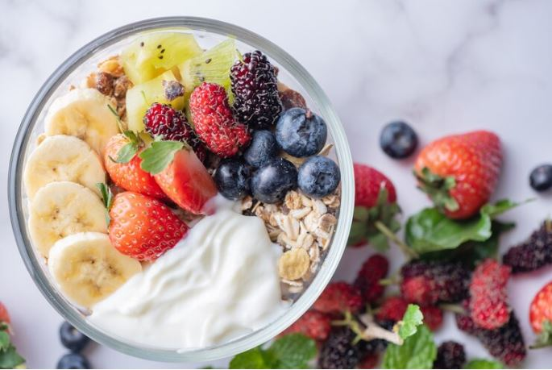
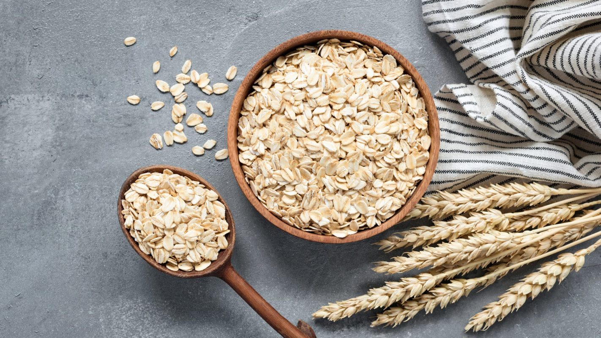

Lácteos ( leche, yogurt, queso etc.) Cereales (avena, maíz, trigo etc.).
LECHE: excelente fuente de nutrientes esenciales para el organismo, ofrece múltiples beneficios para la salud.
Aporta calcio: para el crecimiento de los huesos y dientes fuertes.
Fomenta la salud ósea: el calcio y la vitamina D en la leche ayudan a prevenir la osteoporosis y fracturas.
Fortalece el sistema inmunológico: contiene antioxidantes y vitamina D ayuda a proteger contra infecciones.
Soporta el funcionamiento del sistema nervioso la vitamina B12 en la leche es crucial para la producción de de neurotransmisores..
Queso: es un alimento versátil que ofrece múltiples beneficios para la salud.
Fuente de proteínas: ayuda crecimiento y reparación muscular.
Calcio esencial: rico en calcio y vitamina D igual que la leche ayuda a prevenir fracturas y osteoporosis.
Ayuda a bajar presión arterial: el potasio en el queso puede ayudar a reducir la presión arterial.
Contiene antioxidantes que ayudan a proteger contra daños celulares.
Yogurt: es un alimento versátil.
Ayuda a reducir el colesterol.
Puede ayudar a controlar el peso puede ayudar a sentir saciedad y aumentar la quema de grasa.
Contiene proteínas de lata calidad ayuda a reducir el estrés ya que el Triptófano en el yogurt ayuda producir serotonina, un neurotransmisor que regula el estado de animo.

Cereal: Fuente de fibra.
Ayuda a regular el transito intestinal y prevenir el estreñimiento.
Energía natural: los carbohidratos complejos en cereal proporcionan energía sostenida.
Control de peso: la fibra y los carbohidrato ayudan a sentir saciedad y controlan el apetito.
Mejora la salud cardiovascular: los cereales integrales pueden ayudar a reducir el riesgo de enfermedades cardiacas.
